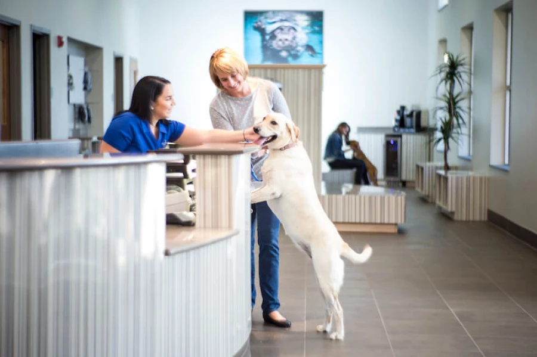
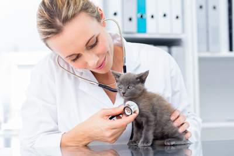

Servicios

3 Consultorios de atención simultáneas para revisiones generales, diagnóstico y controles

Consultas y vacunación a domicilio, el mismo servicio con la comodidad de no trasladar a la mascota hacia nuestra clínica

>>>>>>> desafio_02-CSS
Electrocardiograma, interconsultas con Médicos Veterinarios especialistas en Cardiología Servicio de odontología, limpieza de dientes por ultrasonido.
=======En la Veterinaria Cuki contamos con un equipo de trabajo altamente idóneo para atender a nuestros mejores amigos. Conjugamos las mejores instalaciones para la atención y el cuidado de sus mascotas, con los profesionales más capacitados en la asistencia veterinaria. La salud de nuestras mascotas es tan importante como la de cualquier integrante de la familia.:
Atención las 24 hs., los 365 días del año
Servicios
3 Consultorios de atención simultáneas para revisiones generales, diagnóstico y controles